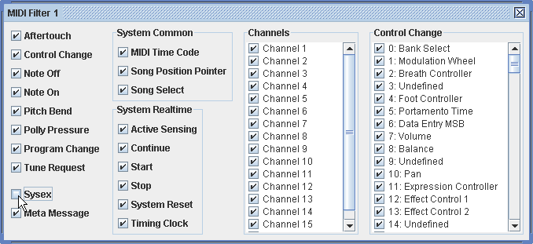

MIDI Messages can be filtered out according to the message type, channel, etc. When the box is ticked, messages of the selected type will be passed as normal. If the box is unticked, they will be dropped. 